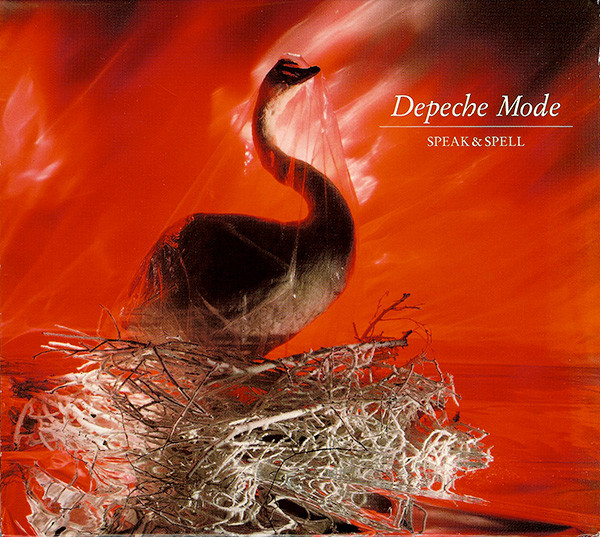

Shout! é uma música do Depeche Mode incluida como faixa Deluxe no albúm Speak & Spell de 1981.
She was silent, trying to be like the girl who acted on the tv
Always knowing when to say
Wishing for a moment so that they could see
Staring in the night
A picture in my room
And I think that she knew her lines
Break away tonight
I wanna hold your hand
We've got to get it right
We've got to understand
Careful, watching, waiting
As I stood upon the back streets and we start to play
I was screaming louder as the curtains fall between us in a twisted way
Staring in the night
A picture in my room
And I think that she knew her lines
Break away tonight
I wanna hold your hand
We've got to get it right
We've got to understand
Placing all the questions in the minutes of a game we won so long ago
Dangerous and beautiful
The radio transmission that I have to know
You could never run
You could never stay
And I think you belong to me
Break away tonight
I wanna hold your hand
We've got to get it right
We've got to understand
Break away tonight
I wanna hold your hand
We've got to get it right
We've got to understand
Vincent Clark